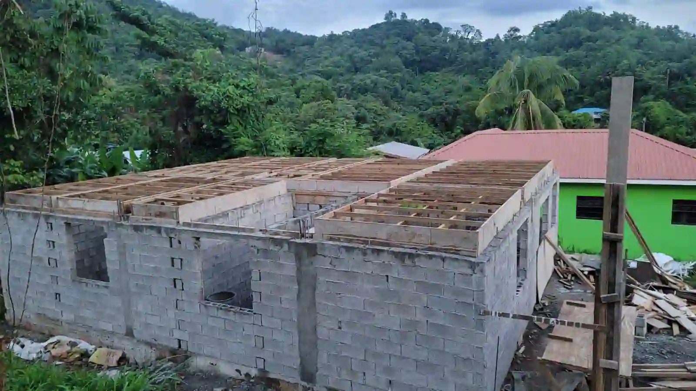
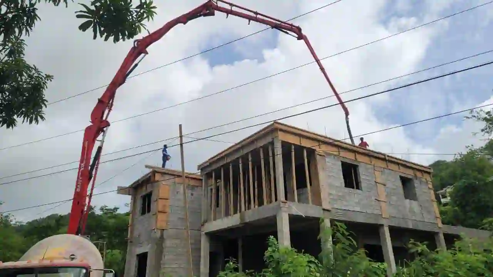
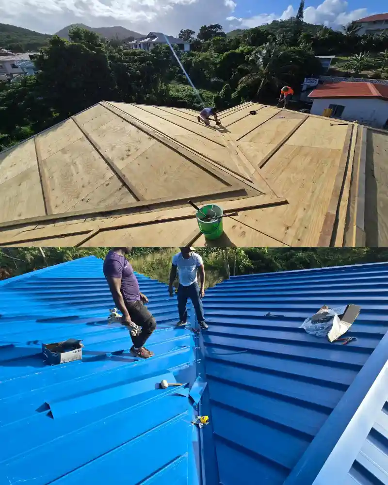
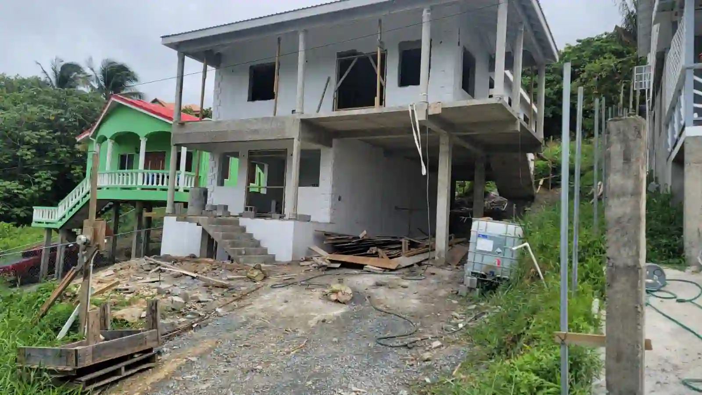
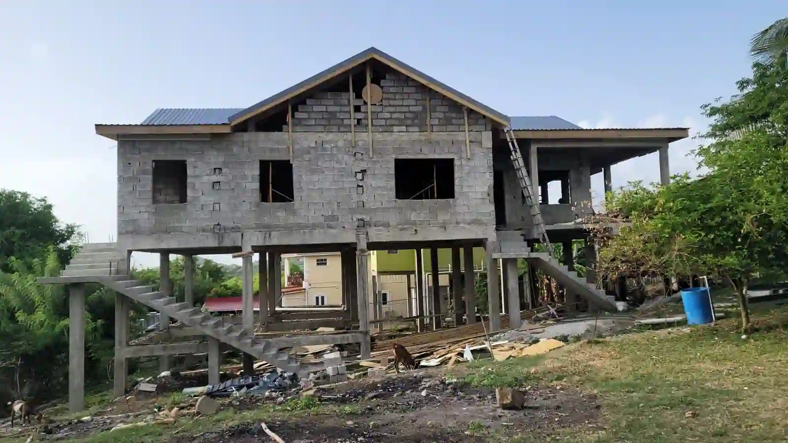
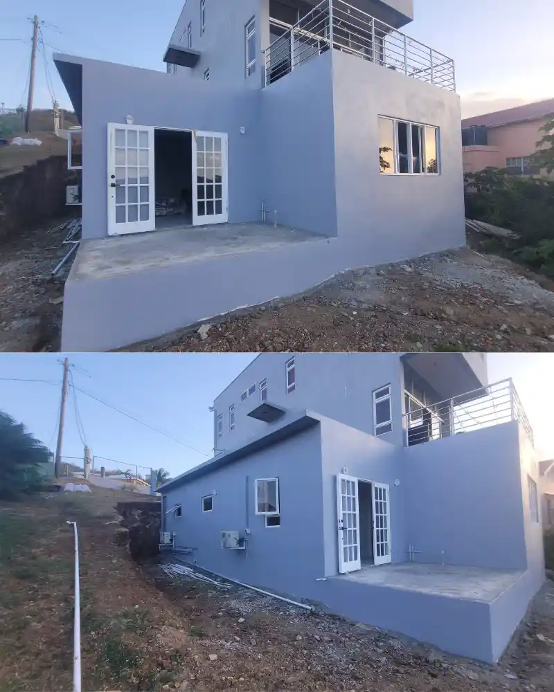
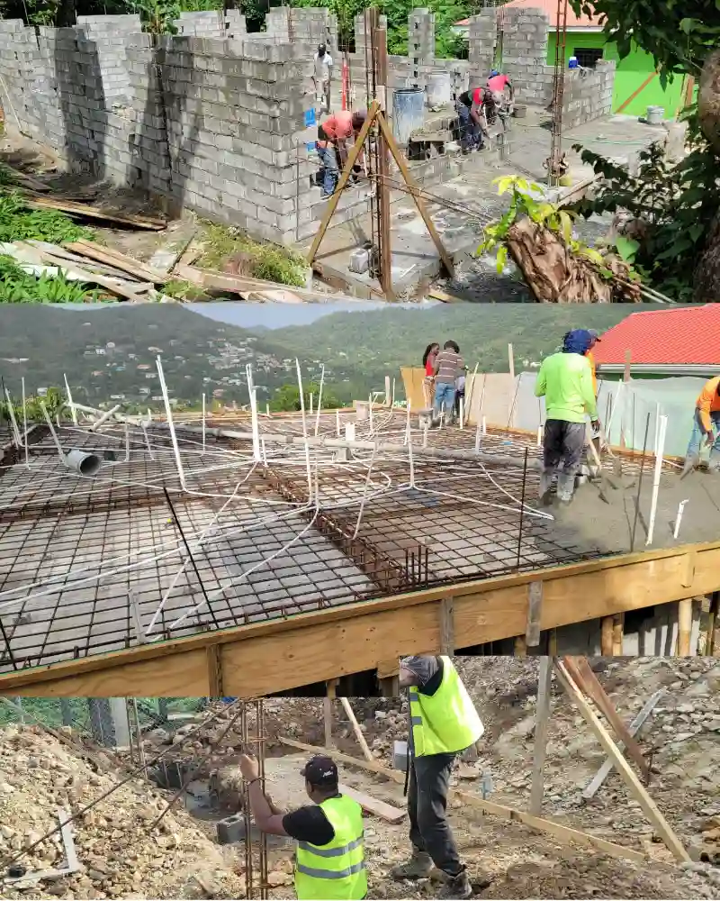

Our Portfolio
Work That Speaks for Itself
Projects completed across Saint Lucia — from first pours to final coats. This is what quality looks like on the ground.
Every build. Every renovation. Done right the first time.


Verdesirs Consulting Inc. has been delivering quality residential construction, renovations, and full project management across Saint Lucia for 6 years — with a free site visit, a written quote before any work begins, and a team that shows up every time.
First Home Builds • Renovations & Upgrades • Overseas Project Management
Projects completed across Saint Lucia — from first pours to final coats. This is what quality looks like on the ground.
Every build. Every renovation. Done right the first time.
Every project you see here was delivered on time, on budget, and with a written quote from day one.
Drag or swipe to explore more






From permits and planning to the final coat of paint — we manage every phase of your residential or commercial build. You get a written quote before a single tool is lifted, a clear timeline from day one, and a team on-site you can reach on WhatsApp at any stage.
Start a Build ConversationWhether it's a single room or a full property overhaul, we bring the same standards to every renovation — detailed quote upfront, no surprise costs, quality materials, and work that's done right the first time. Your home deserves better than guesswork.
Get a Renovation QuoteFor diaspora clients and overseas property owners managing a Saint Lucia project from abroad — we handle everything on the ground. Site visits, contractor coordination, progress photos, and WhatsApp updates keep you fully in control no matter where you are.
Discuss Your ProjectBased in Gros Islet — but our work doesn't stop there. From Cap Estate in the north to Vieux Fort in the south, we take on residential builds, renovations, and project management across every district on the island.
Not sure if we cover your area?
Message Us — We Respond Within the HourManaging a Saint Lucia construction project from abroad is stressful when you can't be there to see it yourself. We handle everything on the ground — site visits, contractor coordination, permits, and purchasing. You get regular WhatsApp photo updates and stay fully in control of every decision, no matter where in the world you are.
Let's Talk About Your ProjectEvery contractor on the island will tell you they're reliable. Here is what we actually do differently.
From Cap Estate to Vieux Fort — we serve every district in Saint Lucia. Local or diaspora, your project location is never a barrier.
Message us on WhatsApp and get a real response fast — not an automated reply. We know delays cost you money, so we don't keep you waiting.
We turn up, we follow through, and we finish what we start. Our clients — both local and overseas — count on us to be present and accountable on every project.
You receive a written quote before any work begins — no verbal estimates, no hidden costs, no renegotiating mid-project. What we quote is what you pay.
Send us a WhatsApp message with a brief description — size, location, what you need. We'll ask the right questions to fully understand your scope.
We come to you — free of charge. After assessing the site, you receive a clear, itemized written quote. No work starts until you approve it.
Our team handles everything from start to completion. You get regular progress updates via WhatsApp — whether you're down the road or overseas — so you're always in the loop.

Everything you need to know before starting your construction project in Saint Lucia.
Don't see your question? Ask us directly.
Ask on WhatsAppChoose your service and send your request directly on WhatsApp. We respond within the hour.
Free site visit included. Written quote before work begins. No obligations.

Verdesirs Consulting Inc. is a full-service construction company proudly rooted in Saint Lucia. For over 6 years, we have brought together experienced professionals, quality materials, and a relentless commitment to doing the job right — from the first foundation pour to the final finishing touches.
Whether you're building your first home, upgrading a commercial space, or managing a project from overseas, we deliver results with one non-negotiable standard: you get a written quote before work begins, a team that communicates clearly, and a build you can stand behind.
We are Saint Lucian-built, island-committed, and here for the long run. Every home we complete is a stake in the ground for what this island deserves.